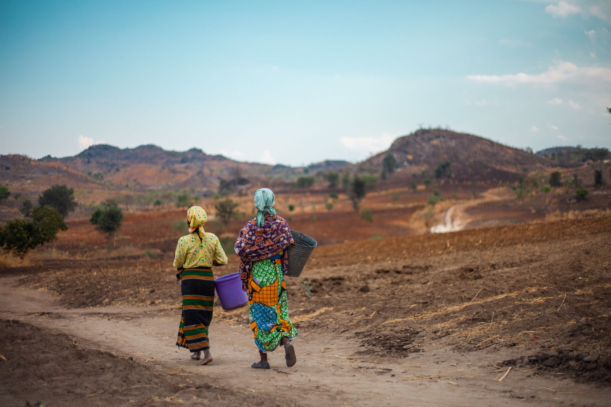

Water Justice = Climate Justice
We build climate-resilient water projects that empower frontline communities in the face of environmental hardship.
Charity Water
Help bring clean and safe drinking water to people in need.
Your donation can change lives!
Donate Now